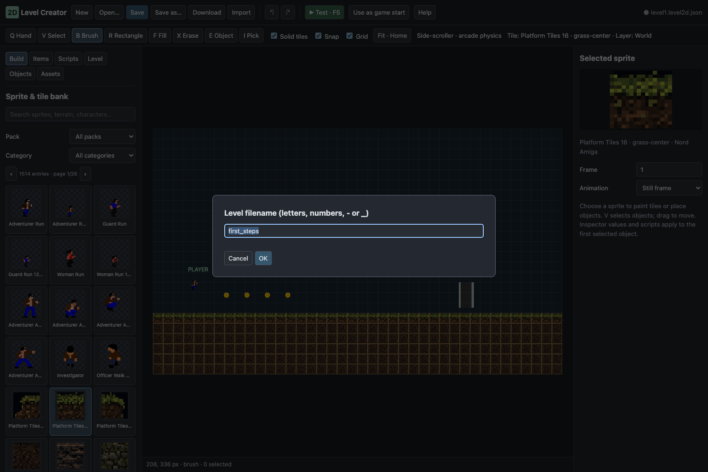
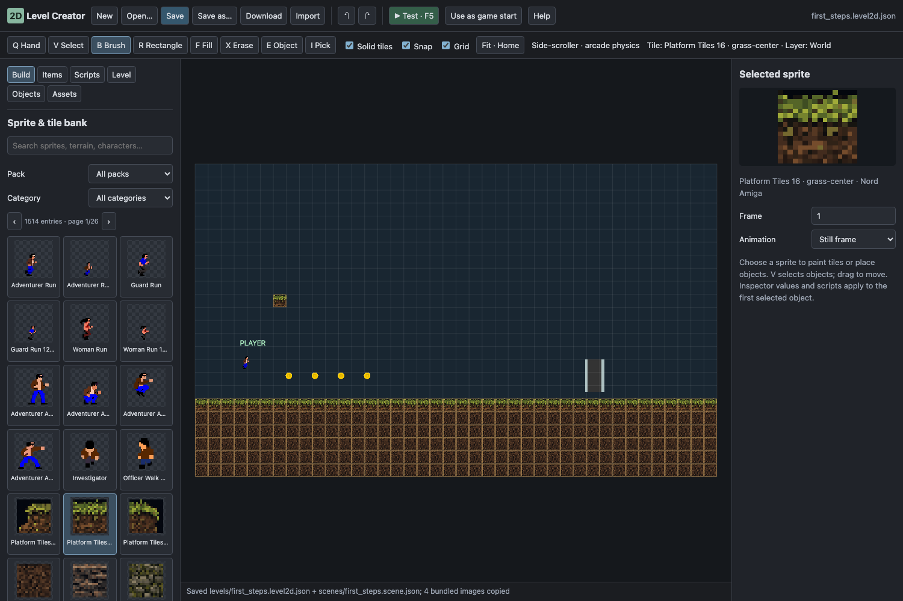
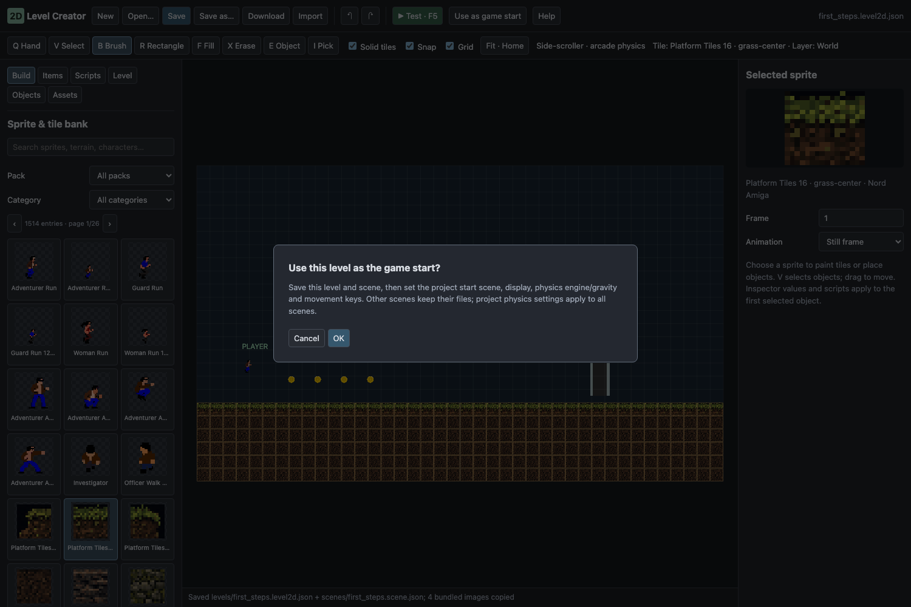
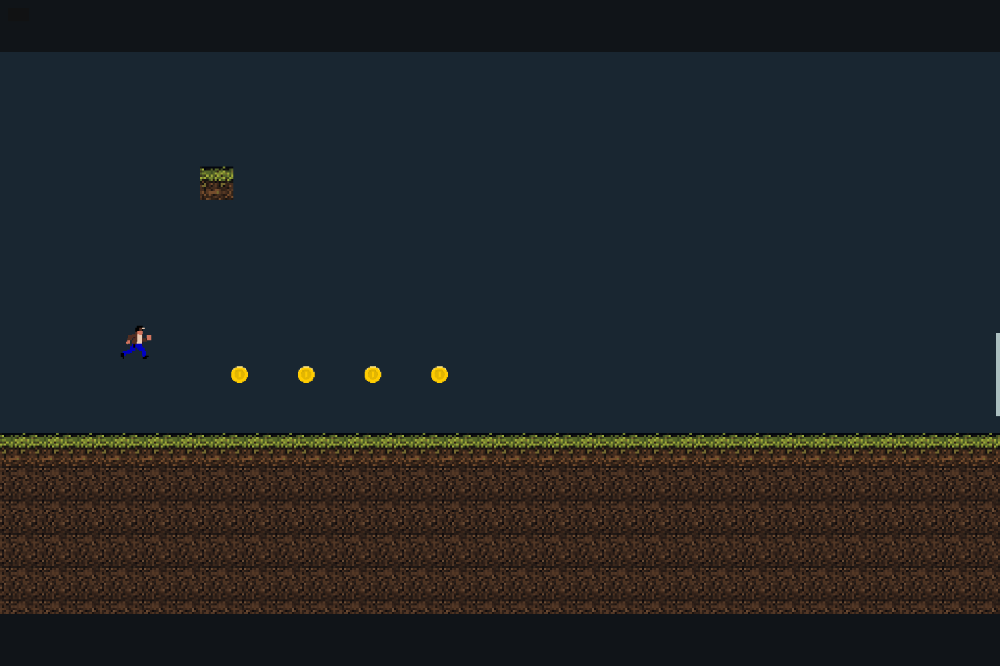

2D Level Creator — sprites, maps and physics
Where does my 2D level go?#
levels/first_steps.level2d.json Your editable map, layers, objects and scripts.scenes/first_steps.scene.json The generated tiles, Player, Camera and object components.nord.project.json → startSceneThe project runs that saved scene.Follow the complete walkthrough below, or jump to opening the generated scene. The existing tool reference follows the walkthrough.
Tutorial: your first playable 2D level#
Goal: paint a small platform level, save it as first_steps, see its ordinary scene, and run it through the project's normal Play button. No JavaScript is required.
1. Start with a working player#
- From the project hub, create a project using 2D Platform Workshop. Keep it in its own project folder. The editor opens the 2D Level tab with a working map.
- To make a fresh practice level, use 2D Level ▸ New, select Side-scroller workshop, and confirm with OK. Save any previous work before replacing it.
- Keep the starter's existing Player, floor, pickups and exit for this exercise. You should see their pictures on the map. Press Home if the map is outside the view.
2. Paint a small platform#
- In Level, select the World layer. Keep it visible and unlocked, with Parallax set to
1for colliding terrain. - Switch to Build, choose a terrain tile, and enable Solid tiles in the toolbar. Press B for Brush.
- Paint a short ledge above the existing floor, leaving space for the Player to stand and jump. Use R Rectangle for a larger block. Use X to erase a mistake, or undo it.
- Keep a continuous floor below the Player. The painted tile pictures should now appear on the map; solid tiles will act as obstacles in the game.
3. Place a pickup and check the player#
- Open Items. Choose a ready-made pickup card from the project's item bank, then use B Brush to click once above the floor. The new object appears at that position with its existing behavior.
- Press V and select the placed object. Its Inspector shows its position, body and scripts. Move it somewhere reachable without putting it inside a solid tile.
- Select the starter Player. Keep its name Player and its
playertag. Those are used by the camera and interactions.
If you use Create an item from a sprite instead of a ready-made card, choose the appropriate Placement role before placing it. A decorative picture has different behavior from a Pickup or Player start. The ready-made item cards are the easiest route for this first exercise.
4. Test the unsaved map#
- Click ▶ Test · F5 inside the 2D Level toolbar. The game opens over the level editor.
- Focus the test, move with A/D or the arrows, and jump with Space. Try the new ledge and pickup.
- Click Stop · Shift+Esc, or press Shift+Esc, to return to building. Adjust the map and test again until the player can move and land correctly.
5. Save the level AND generate the scene#
- In the Creator's own top bar, click Save as….
- Enter
first_stepsand confirm with OK. Enter the basename only: nolevels/prefix and no extension. - Read the status line at the bottom. It should report both
levels/first_steps.level2d.jsonandscenes/first_steps.scene.jsonas saved. Future Save clicks update this pair.


| File just created | Open it to do what? | Which file should you keep editing? |
|---|---|---|
levels/first_steps.level2d.json |
Reopen the editable map in 2D Level ▸ Open… | This is your authoring source |
scenes/first_steps.scene.json |
Inspect the generated ordinary scene in Nord's Scene tab | Treat it as generated output while using the Creator |
Saving also copies the referenced bank assets and required scripts into your project. A successful save message is the handoff from the Creator to normal Nord files.
6. Tell the real game to use this scene#
- Still in 2D Level, click Use as game start.
- Read the confirmation: it saves the level and scene and updates the project's starting scene, display, physics and movement keys. Confirm with OK for this workshop project.
- Check the status line for game start updated. This is the step that connects your map to the project's normal starting point.

In the file nord.project.json (check this one field; keep the rest of the manifest):
{ "startScene": "scenes/first_steps.scene.json" }7. Open the generated scene in the real Scene tab#
- Stop the Creator test and main Play, if either is running.
- In Nord's normal Assets panel, open the project's scenes folder and double-click
first_steps.scene.json. The ordinary Scene tab opens that file. - Inspect Hierarchy. You should find ordinary scene entities, including Player, Camera, and generated tile/object entities. This is already the “real scene”—it is not a picture of the Creator map.
- In the normal Project tab, expand Project properties and check Start scene. It should name
scenes/first_steps.scene.json. If the field still shows an older setting, reopen the project first to refresh it. If you deliberately need to change it, select that path and click Apply project properties. - Press the normal editor's Play button. The saved
first_stepsmap should run, including your ledge and pickup.
If the new scene is not listed or main Play still uses an older project setting, stop and reopen the project, then check the same paths again. Do not solve a file-selection problem by copying the tiles manually into another scene.

8. Make a change and export#
- Return to 2D Level ▸ Open… and open
first_steps.level2d.json. Change one visible tile or pickup position. - Click the Creator's Save. That regenerates
scenes/first_steps.scene.jsonfrom the updated authoring file. Test with normal Play again; the saved change should now appear there too. - Stop, save any other edited project files, then use File ▸ Export… for a normal web-folder export. Open the exported game through a web server and verify the same starting map. See Export for hosting details.
Tutorial checkpoint#
- The Creator status line names two saved files with the same basename.
- The normal Scene tab can open
scenes/first_steps.scene.jsonand shows generated entities. nord.project.jsonstarts at that scene, and normal Play shows your latest saved edit.- You can reopen
levels/first_steps.level2d.jsonto continue authoring.
Already have a title scene or custom game logic?#
Keep the authoring level and generated gameplay scene inside the same 2D project as your menu, assets and scripts. You do not have to make the gameplay scene the permanent project start if the game should begin with a title screen.
| What you want | Use this workflow |
|---|---|
| Game starts directly in the new map | Follow Use as game start above |
| Game starts at a title/menu scene, then opens the map | Keep the title as the project's Start scene; its Play action loads scenes/first_steps.scene.json |
| Custom level-wide HUD or controller | In Creator Level ▸ Level controller, choose your project script; Save preserves that authoring choice in the generated scene |
| Custom pickup or enemy behavior | Attach/configure scripts on objects in the Creator, then Save |
| Manually add entities to a generated scene | Know that a later Creator Save can overwrite those edits; prefer authoring-owned objects/scripts |
For a scripted transition, import SceneManager from nord and call await SceneManager.LoadScene('scenes/first_steps.scene.json') inside an async menu action. Scenes and persistent objects supplies the complete workflow. The title and gameplay scene share project-wide physics and input, so review those settings before applying another level's defaults.
Test works, but the real scene is wrong#
| What you see | Likely missing step | What to do |
|---|---|---|
| Test shows the new level, main Play shows the old one | Start scene still points at the previous scene | Use Use as game start, then check Project properties |
| Main Play shows an earlier version of the right map | Unsaved Creator changes | Stop Test and click Creator Save |
You saved first_steps but still have main.scene.json open |
Save does not automatically replace the document you are viewing | Open scenes/first_steps.scene.json in Assets |
You drag .level2d.json and nothing useful happens |
It is an authoring file, not a scene entity | Open it through Creator Open…, then Save and open its generated scene |
| Two files have similar names | Authoring map versus generated scene | .level2d.json is edited in the Creator; .scene.json runs as a normal scene |
| Scene edits vanish after a Creator Save | The generated scene was edited independently | Put persistent map/object changes in the authoring level |
| Player falls through art | Decoration or non-solid terrain | Check collision, Solid tiles, layer Parallax and body setup |
| No Player/camera behavior | Player role, name or tag was changed | Start from the workshop Player; keep Player and player |
Existing tools and reference#
The sections below remain the general reference for the Creator, sprites, layers, physics and project files.
The 2D Level tab brings the FPS Level workflow to platform games, top-down games and physics puzzles. Start from 2D Platform Workshop, 2D Top-down Workshop, or Machine Workshop on the welcome screen.

Find a useful starting point#
The welcome screen has Featured / All / 2D / 3D / FPS / Physics / Apps / Rust filters for templates and samples. Featured keeps the short list manageable. Choose All to browse older examples; searching also finds older examples while Featured is active. No examples are deleted.
Build a platform or top-down game#
- Create a project from the matching workshop template. Open 2D Level; its saved workshop opens automatically.
- In Build, filter by pack/category or search. The bank contains the original Amiga collection and CC0 Kenney terrain, characters, industrial parts, dungeon tiles, sports and shooter art. Cards show frame previews; animated sheets play their real presets.
- Choose B Brush, R Rectangle or F Fill and paint on the map. Solid tiles gives those cells collision. Use X to erase and I to pick a picture from a tile/object.
- In Items, the first cards are working project items with their scripts and values. Select one and use B Brush to click/drag on the map, or drag its card onto the map. Two Floors includes Rat/Key/Door/Potion/Stairs/Relic; tanks include Enemy/Brick/Steel/Base. To create a generic item from raw art, select Player start, Pickup, Hazard, Exit / win, Door (E), Patrolling enemy, or a decoration/physics role, then choose a sprite and click to place. E is the object tool. Player must be named Player for the camera and have the
playertag for interactions. - V selects and moves objects; Shift-click selects several. The Inspector changes position, size, rotation, frame/animation, tags, body and scripts. Script fields are editable values; advanced attributes use JSON. Controllers and pickups are copied from Nord's existing library.
- F5 tests the unsaved level. WASD/arrows move, Space jumps in platform mode, E uses a nearby door, Esc pauses and R restarts. Shift+Esc returns to editing.
Middle/right drag or Space-drag pans, wheel zooms and Home fits the map. Ctrl/Cmd+Z undoes, Ctrl/Cmd+Shift+Z redoes, Ctrl/Cmd+D duplicates, Delete removes selected objects.
Moving around#
The view works like the Scene view: middle- or right-drag, Alt+drag, Space+drag or the Q Hand tool pans, the wheel zooms about the cursor, Ctrl/Cmd flips snapping while you drag, Home fits the level and Shift+F frames the selection.
Layers and reusable items#
Level manages layers from back to front. Select a layer to paint on it; hide, lock, reorder or rename it. Opacity and parallax control scenery. Parallax 1 is the normal world; 0 is fixed to the screen. Solid tile layers require 1. Hidden layers do not appear in gameplay. Brush clicks and palette drops both reject locked or hidden active layers; unlock and show the layer before placing content.
Select an object and use Save as variant to keep its appearance, body and scripts as a reusable item. Assets lists the saved variants; each placement gets a new independent identity. Variants live in the level file and are saved with it.
Objects finds placed things by name, tag or script and centres the map on them. Scripts attaches ready-made behaviors. Custom project scripts use scripts/*.js paths and can be edited through Nord's Code tab. Attach and configure the Hazard / exit / switch / door script to choose its action, target name, damage amount, win message and required score.
Side-view physics and Machine Workshop#
Choose Level → Physics → Arcade for ordinary platforms and action games. Choose Matter for rolling circles, rotated ramps and freely rotating boxes. Inspector controls include:
| Control | Effect |
|---|---|
| Body | None, static obstacle, dynamic simulated body, or script-driven kinematic body. |
| Trigger | Sends overlap events without blocking motion. |
| Shape | Box or circle; Arcade boxes remain axis-aligned. |
| Fixed rotation | Keeps a character upright; turn off for tumbling physics props. |
| Mass | Changes impulse and collision response. |
| Bounce | Restitution: 0 absorbs impact, larger values bounce. |
| Friction | Matter surface friction. |
| Drag | Slows body movement. |
| Gravity scale | 0 makes the body weightless; 1 uses normal gravity. |
Gravity is in pixels/s²; top-down mode uses zero gravity. Matter's kinematic bodies are static bodies moved by scripts. Joint/constraint editing is not included.
Machine Workshop is an original The Incredible Machine-style example. The main game begins in setup mode. Tune the two ramp angles, click Release, and guide the ball into the basket. Reset restores the apparatus. In 2D Level you can also move ramps and change body size, mass, bounce and friction. The sample's scripts/machine.js implements its setup controls; it uses normal Nord entities and Matter physics. No original TIM code or media is bundled.

Import your own art#
Assets → Import PNG copies a local PNG into the project. Register project image adds an existing PNG or uniform spritesheet: set frame width/height, column count and optional consecutive-frame loop/FPS. A still image uses its full dimensions and one column. Save writes Nord metadata next to custom images. Remote image URLs are not accepted.
Save and export the correct level#
Save writes two files:
levels/<name>.level2d.json: editable map, layers, objects, custom sprites and variants.scenes/<name>.scene.json: compiled ordinary Nord scene for Play/export.
Save copies only referenced bundled sheets, metadata and licence documents into the project. The editor bank and TEMP/ART are not required by an exported game. Existing edited scripts are preserved. A conflicting bundled asset is reported instead of overwritten.
Use Use as game start when this map should run from the main Play button or export. It saves the level/scene and applies project display, physics and input settings. Those settings affect the whole project. Then use Nord's normal Export command. F5 always tests unsaved data; main Play/export run saved files.
The editor currently supports finite orthogonal maps. It has no isometric/hex maps, automatic terrain rules, polygon/joint editor or Tiled/LDtk importer. Drag-and-drop feel in the native editor window has had less testing than the browser version.
Check yourself#
- Find your matching
.level2d.jsonand generated.scene.json; both have the intended basename. - Confirm Project properties points at the intended starting scene, or that your menu loads the generated gameplay scene.
- Change one Creator tile, Save, then prove it appears in normal Play and the exported game.
- Save the project, then repeat the action from the section you used. Confirm the stated result before moving on.
- If Play fails, check the Console for the first error and compare file paths and capitalisation with the example.
- For platform or feature limits, check Known issues.
Next: Choose a worked example. Back to: Manual reading paths.